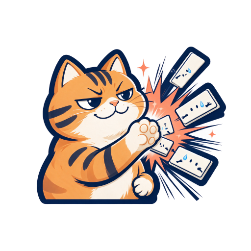
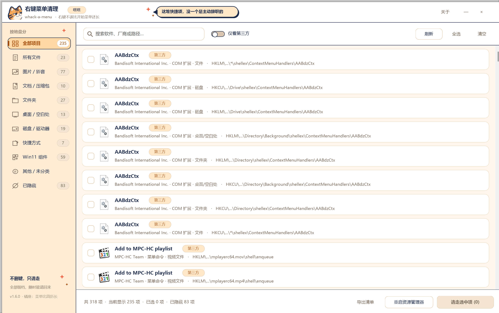
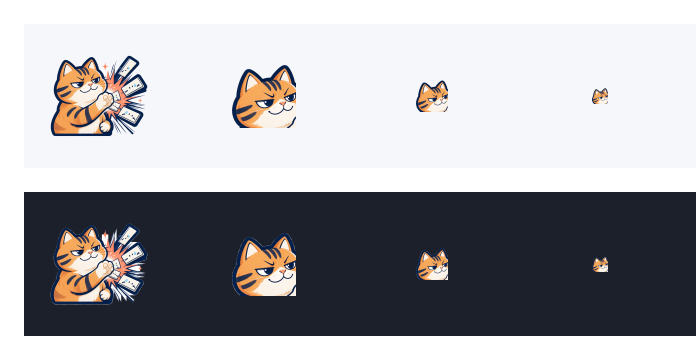
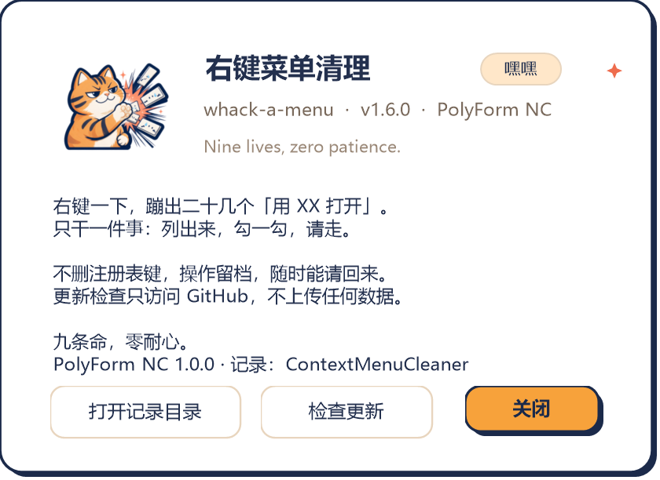

冒出来一个，拍掉一个。
把 Windows 11 右键菜单里那些自己跑进来的快捷项，勾一勾，请到一边去。
装了解压软件、网盘、Git、播放器、杀软、编辑器之后，右键一个文件会弹出长长一串。手工清理要去注册表里翻好几个位置，既难找又容易删错。
界面由程序自身离屏渲染生成，不是设计稿。



从下载到恢复，一共五步。
从 Releases 下载 ContextMenuCleaner.exe，双击即可，无需安装。建议第一次「以管理员身份运行」——HKLM 里的项和 Win11 现代组件需要管理员权限才能清理。
打开后自动扫描，列出所有右键菜单项。用顶部搜索框按名称 / 厂商 / 注册表路径查找，或按左侧分类筛选：所有文件、图片 / 影音、文档 / 压缩包、文件夹、桌面 / 空白处、磁盘 / 驱动器、快捷方式、Win11 组件。分类对应 Explorer 里真正会弹出该项的位置，例如「右键一张照片才有」的项归在图片 / 影音。勾上「仅看第三方」可以跳过系统项。已经请走的项不会混在这里，只出现在「已隐藏」。
确认弹窗会列出要处理的项。清理采用可逆隐藏，不删除注册表键；系统内置项被识别并加锁，强行勾选会二次警告。
菜单缓存由 Explorer 持有，重启后任务栏和桌面会短暂刷新，不会关闭你打开的程序窗口。也可以注销 / 重启代替。
所有操作都记录在 %LOCALAPPDATA%\ContextMenuCleaner\hidden.xml，即使程序被移动或重装也能恢复。想彻底退场，先「恢复全部」再删除 exe 即可。
重点：不删键，只让 Explorer 不再加载它。
| 类型 | 隐藏方式 | 恢复方式 |
|---|---|---|
| 静态命令（shell verb） | 写 ProgrammaticAccessOnly；现代菜单的 ExplorerCommandHandler / DelegateExecute 备份后移除 | 删除标记、写回原值 |
| COM 扩展 | 把默认值 CLSID 备份到 CMC_OriginalCLSID 后置空 | 写回原 CLSID |
| Win11 打包组件 | 把 CLSID 加入系统 Shell Extensions\Blocked 黑名单 | 从黑名单移除 |
完整注册表说明见 docs/REGISTRY.md。
软件启动时会在后台访问一次 api.github.com/repos/KyuuKyuuStone/whack-a-menu/releases/latest，只为读取最新版本号；不上传任何本机数据，超时 6 秒后静默失败，绝不影响主程序。只有发现新版本时才会弹提示，点「否」后该版本不再提醒。也可以随时在「关于 → 检查更新」手动查询。
--check-update 可以在不打开界面的情况下查看检查结果。本项目采用 PolyForm Noncommercial License 1.0.0（SPDX: PolyForm-Noncommercial-1.0.0）。这是专为软件撰写、被 SPDX 收录的非商业许可，不是 OSI 认证的「开源」协议——因为作者不希望它被拿去商用。
Required Notice 版权声明。全文见 LICENSE · 官方说明 polyformproject.org ↗